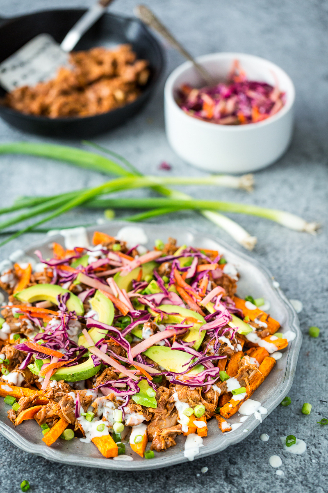

BBQ Jackfruit

Description
Exactly what you've been waiting for... a deliciously and conspicuously vegan version of the fan favorite. Has the texture of pulled pork, without the ethical implications. All served on a bed of crispy fresh coleslaw (fries optional but recommended).
Ingredients
- two 20-ounce cans of jackfruit, rinsed and drained
- 1 tsp vegetable oil
- 1/2 sweet onion, chopped
- 2 tbsp soy sauce
- 1 cup BBQ sauce of choice, divided
- 1 tbsp cornstarch
Instructions
- Preheat oven to 375 degrees F. Line a baking sheet with parchment paper.
- Tear the jackfruit into shreds.
- In a small bowl, mix together 1/2 cup of BBQ sauce and cornstarch. Set aside.
- Cook the onions until translucent in a shallow pan over medium heat.
- Add the jackfruit, soy sauce, and remaining 1/2 cup of BBQ sauce. Cook for 5 minutes until the liquid has been absorbed by the jackfruit.
- Add the sauce-cornstarch mixture until combined.
- Turn heat off and spread jackfruit on baking sheet. Bake for 12-15 minutes until jackfruit is tender.
- All done. Enjoy!